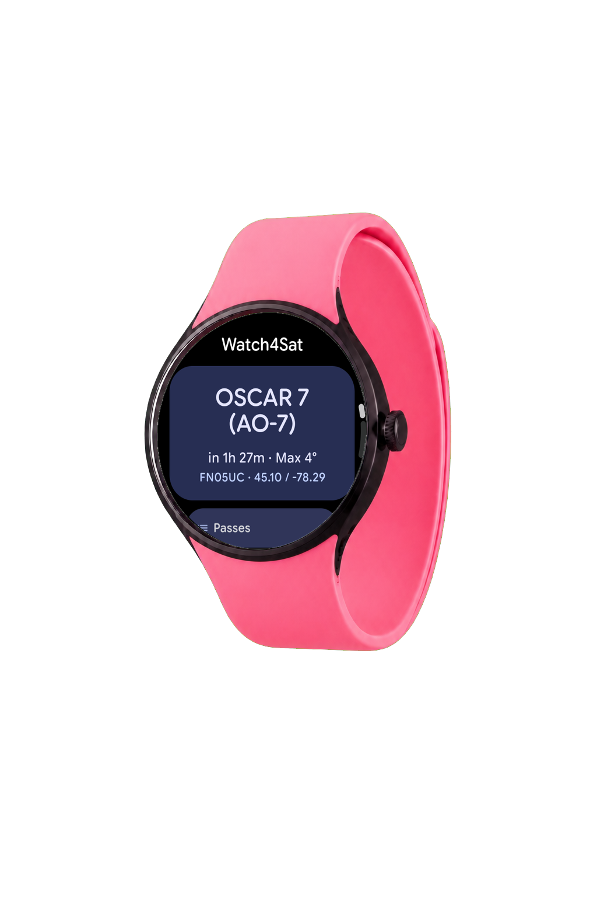
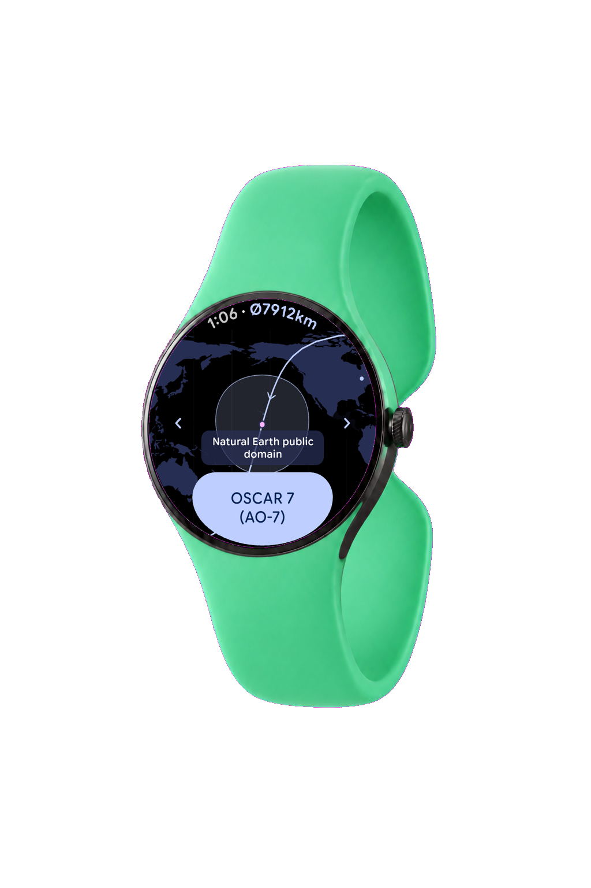
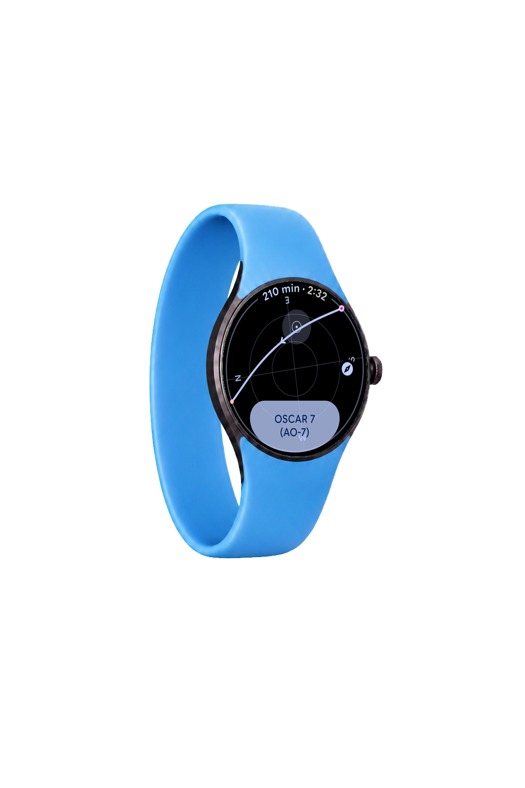
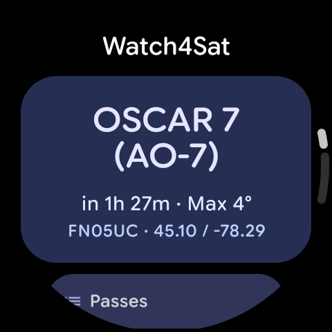
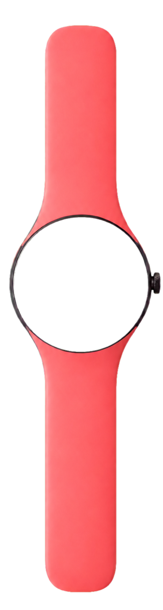
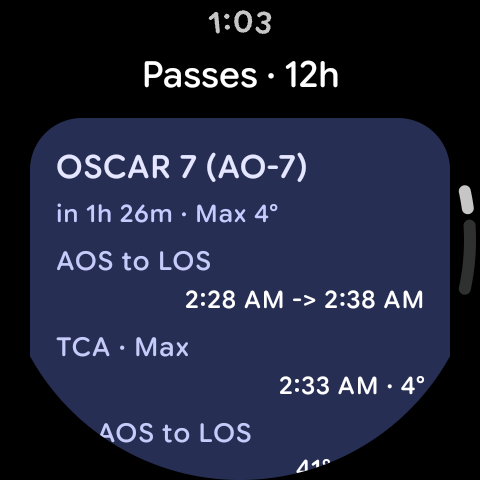
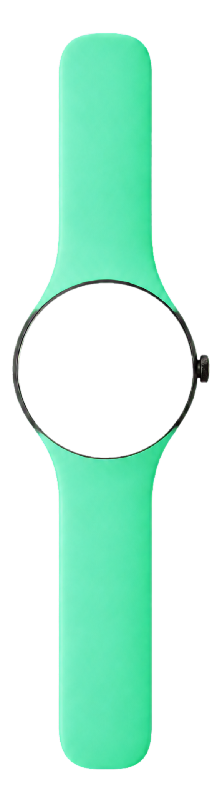
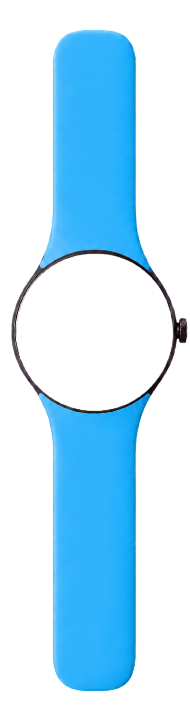
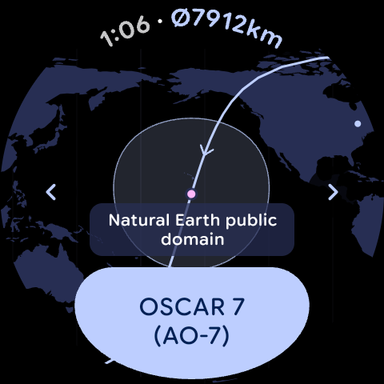
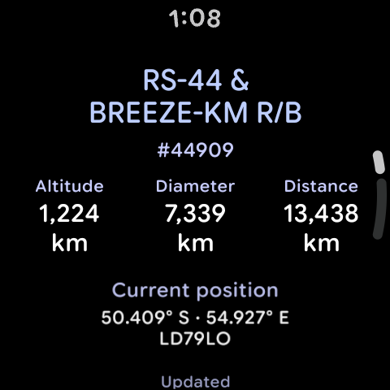

Watch4Sat
Plan satellite passes, point with live Radar guidance, and follow ground tracks from a standalone Wear OS watch.
Signed APK and AAB are not published yet.



AOS · At a glance
Know what rises next.
Dashboard and pass planning put time-to-rise, maximum elevation, and the full AOS-to-LOS window on your wrist.




TCA · Live guidance
Point with the watch.
Wrist-aware Radar translates azimuth and elevation into a direct, full-screen guide, with north-reference and pointing-assist modes.

LOS · Ground track
Follow the orbit.
Switch satellites smoothly, inspect footprint and track, then open live altitude, distance, and current-position details.


Open source · Built for Wear OS
Keep satellite tracking within reach.
Watch4Sat is free software for standalone Wear OS watches. Explore the source, follow releases, and review exactly how the app handles your data.